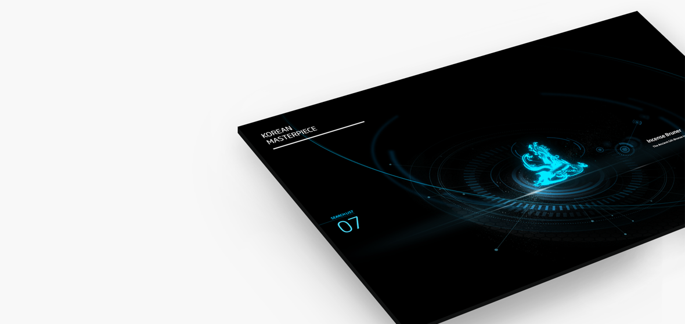

Space oven
CV
Projects

Kick off
This project is proceed in Vinyl I, which is exploring cultural properties and displaying information about that on the screen by using a transparent display.
이 프로젝트는 Vinyl I 에서 진행한 프로젝트로, 박물관 유물을 탐색하고 각 유물에 대한 정보를 나타내는 투명 디스플레이 UI 디자인 입니다.